Chapter 9 Temperature Anomaly

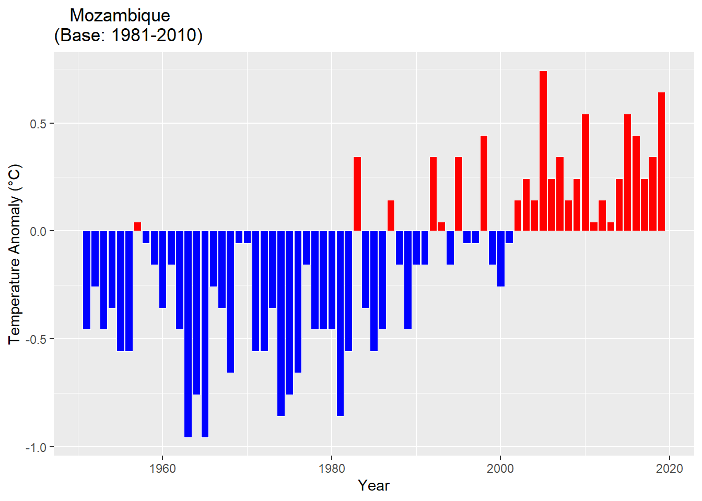
- Projected future impacts, vulnerabilities and risks
Em Moçambique, alguns estudos apontam para um aumento significativo para a temperatura, sendo que a temperatura média anual está projectada para aumentar entre 1.0 a 2.8 °C por volta de 2060 e entre 1.4 a 4.6 ° C em 2090 (INGC, 2009; Mcsweeney et al., 2010) (igura 1.10). A taxa projectada de aquecimento será mais rápida nas regiões interiores de Moçambique do que nas áreas mais próximas da costa. Todas as projecções indicam aumentos substanciais na frequência de dias e noites considerados “quentes” no clima actual. Sendo que este aumento estará entre 17 e 35% de dias por ano, por volta de 2060 e entre 20 e 53% de dias por ano em 2090. As mesmas projecções indicam também uma redução na frequência de dias e noites consideradas “frias” no clima actual.
Temperature

Figura 1.10: Tendências da temperatura média anual em Moçambique para o passado recente entre 1960 e 2006 (linha em preto) e o futuro projectado para três cenários de emissões (linhas coloridas). As barras coloridas no lado direito indicam os diferentes cenários usados nas simulações (A2, A1B e B1) assim como as faixas de incertezas nas projecções de climas médios por volta de 2090 – 2100 (Adaptado de Mcsweeney et al., 2010).
9.0.1 ssp245

Fig. 4a. Mean temperature change (C) for Mozambique for 2020 – 2040 compared to reference period 1971 – 2000 for the medium emissions scenario (ssp245). BCC-CSM2-MR Model

Fig. xx Mean temperature change (C) for Cabo Delgado for 2021 – 2040 compared to reference period 1971 – 2000 for the medium emissions scenario (ssp245). BCC-CSM2-MR Model
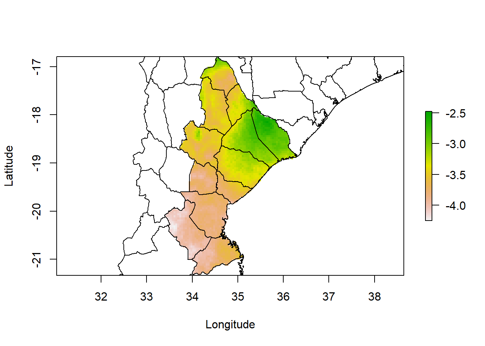
Fig. xx Mean temperature change (C) for maputo for 2021 – 2040 compared to reference period 1971 – 2000 for the medium emissions scenario (ssp245). BCC-CSM2-MR Model

Fig. xx Mean temperature change (C) for Gaza for 2021 – 2040 compared to reference period 1971 – 2000 for the medium emissions scenario (ssp245). BCC-CSM2-MR Model

Fig. xx Mean temperature change (C) for Inhambane for 2021 – 2040 compared to reference period 1971 – 2000 for the medium emissions scenario (ssp245). BCC-CSM2-MR Model

Fig. xx Mean temperature change (C) for Manica for 2021 – 2040 compared to reference period 1971 – 2000 for the medium emissions scenario (ssp245). BCC-CSM2-MR Model

Fig. xx Mean temperature change (C) for Maputo for 2021 – 2040 compared to reference period 1971 – 2000 for the medium emissions scenario (ssp245). BCC-CSM2-MR Model
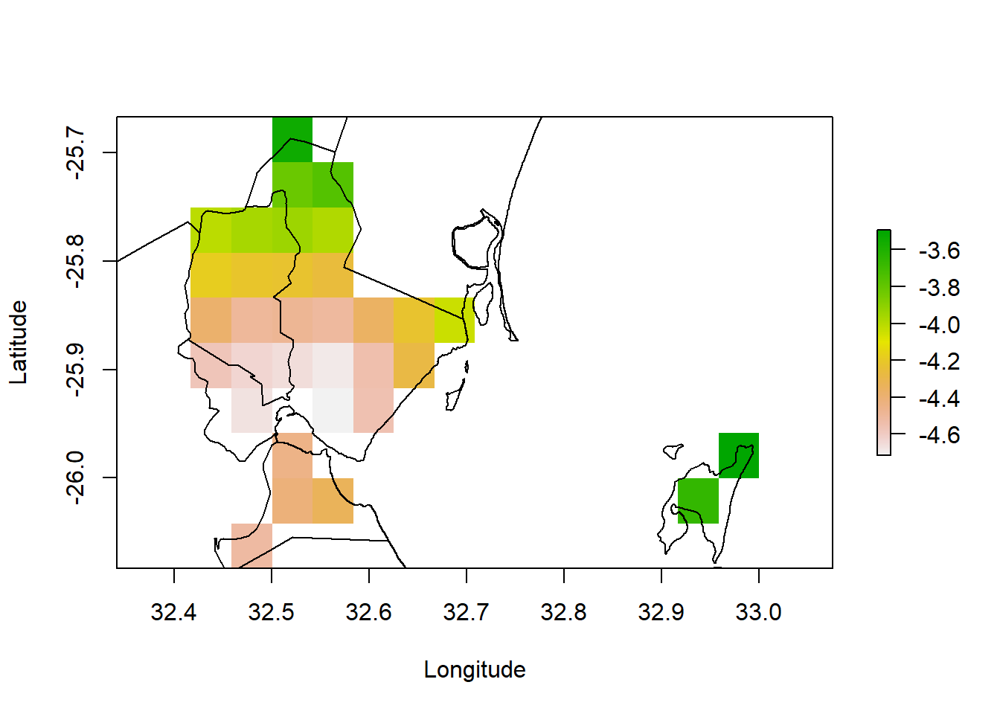
Fig. xx Mean temperature change (C) for Maputo City for 2021 – 2040 compared to reference period 1971 – 2000 for the medium emissions scenario (ssp245). BCC-CSM2-MR Model
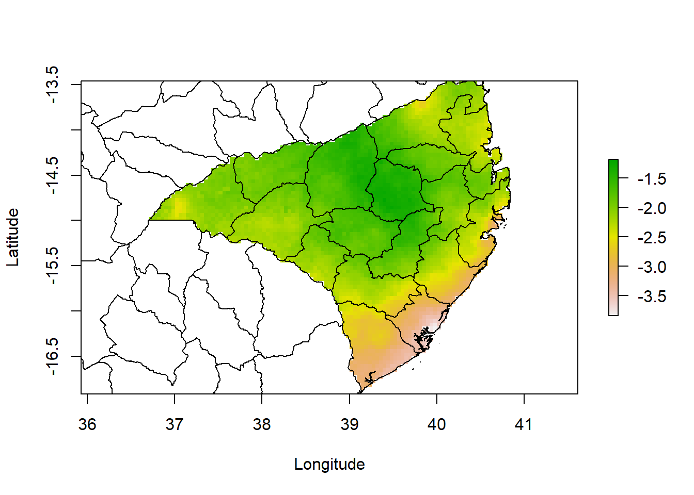
Fig. xx Mean temperature change (C) for Nampula for 2021 – 2040 compared to reference period 1971 – 2000 for the medium emissions scenario (ssp245). BCC-CSM2-MR Model
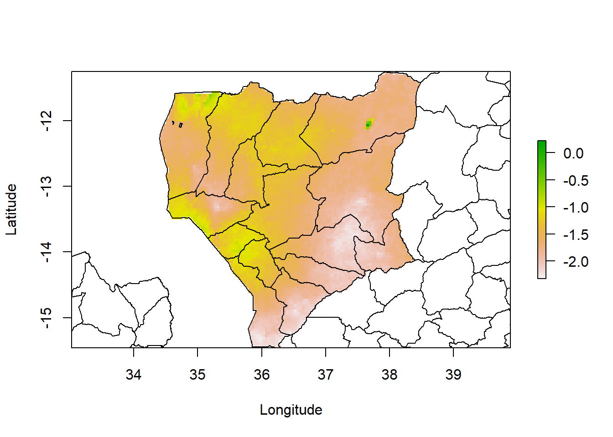
Fig. xx Mean temperature change (C) for Nassa for 2021 – 2040 compared to reference period 1971 – 2000 for the medium emissions scenario (ssp245). BCC-CSM2-MR Model

Fig. xx Mean temperature change (C) for Tete for 2021 – 2040 compared to reference period 1971 – 2000 for the medium emissions scenario (ssp245). BCC-CSM2-MR Model

Fig. xx Mean temperature change (C) for Zambezia for 2021 – 2040 compared to reference period 1971 – 2000 for the medium emissions scenario (ssp245). BCC-CSM2-MR Model

Fig. 4b. Mean temperature change (C) for Mozambique for 2021 – 2040 compared to reference period 1971 – 2000 for the high emissions scenario (585). BCC-CSM2-MR Model.

Fig. 4b. Mean temperature change (C) for Cabo Delgado for 2020 – 2040 compared to reference period 1971 – 2000 for the high emissions scenario (585). BCC-CSM2-MR Model.

Fig. 4b. Mean temperature change (C) for maputo for 2021 – 2040 compared to reference period 1971 – 2000 for the high emissions scenario (585). BCC-CSM2-MR Model.
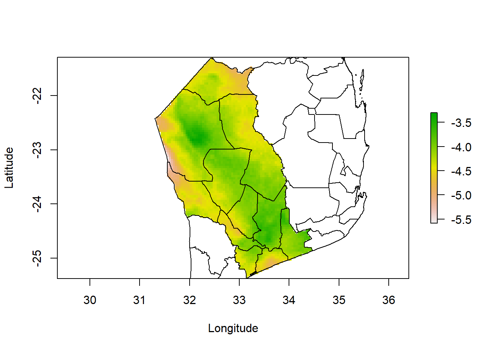
Fig. xx Mean temperature change (C) for Gaza for 2021 – 2040 compared to reference period 1971 – 2000 for the high emissions scenario (ssp585). BCC-CSM2-MR Model

Fig. xx Mean temperature change (C) for Inhambane for 2021 – 2040 compared to reference period 1971 – 2000 for the high emissions scenario (ssp585). BCC-CSM2-MR Model
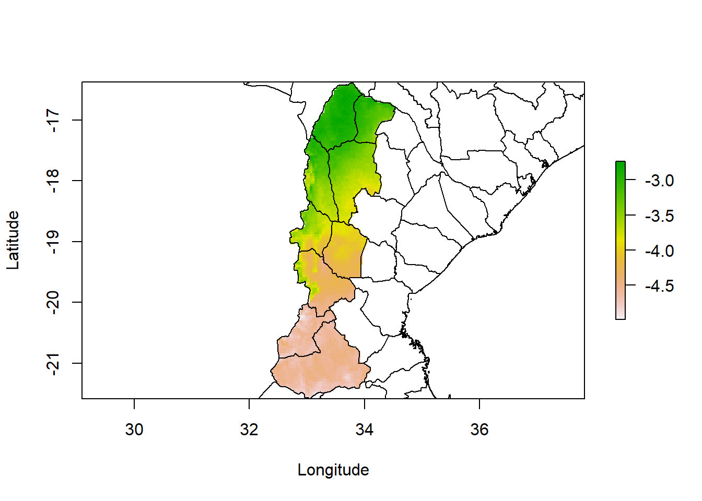
Fig. xx Mean temperature change (C) for Manica for 2021 – 2040 compared to reference period 1971 – 2000 for the high emissions scenario (ssp585). BCC-CSM2-MR Model

Fig. xx Mean temperature change (C) for Maputo for 2021 – 2040 compared to reference period 1971 – 2000 for the high emissions scenario (ssp585). BCC-CSM2-MR Model

Fig. xx Mean temperature change (C) for Maputo City for 2021 – 2040 compared to reference period 1971 – 2000 for the high emissions scenario (ssp585). BCC-CSM2-MR Model

Fig. xx Mean temperature change (C) for Nampula for 2021 – 2040 compared to reference period 1971 – 2000 for the high emissions scenario (ssp585). BCC-CSM2-MR Model

Fig. xx Mean temperature change (C) for Nassa for 2021 – 2040 compared to reference period 1971 – 2000 for the high emissions scenario (ssp585). BCC-CSM2-MR Model

Fig. xx Mean temperature change (C) for Tete for 2021 – 2040 compared to reference period 1971 – 2000 for the high emissions scenario (ssp585). BCC-CSM2-MR Model

Fig. xx Mean temperature change (C) for Zambezia for 2021 – 2040 compared to reference period 1971 – 2000 for the high emissions scenario (ssp585). BCC-CSM2-MR Model
Projecções Futuras da Precipitação
As variações da precipitação não são tão claras como as da temperatura. A gama de projecções de precipitação resultantes de diferentes modelos é grande e abrange mudanças negativas e positivas. Há indicações de variações entre -15 a + 20 mm por mês, ou -15% a + 34% (Mcsweeney et al., 2010). Contudo, os modelos mostram mais coerência nas projecções sazonais, indicando redução das chuvas na estação seca, isto é, no período de Junho a Agosto (JJA) e de Setembro a Novembro (SON). Esta redução é compensada parcialmente pelo aumento das chuvas na estação chuvosa, no período de Dezembro a Fevereiro (DJF), com maior expressão no norte de Moçambique (Mcsweeney et al., 2010). Em geral, as projecções de precipitação não indicam mudanças substanciais na precipitação anual, mas sim na mudança dos padrões de precipitação (Figura 1.11).

Figura 1.11: Padrões espaciais das médias mensais de precipitação no período de setembro a novembro projectada para os anos 2030, 2060 e 2090 (Adaptado de Mcsweeney et al., 2010).
9.0.2 ssp126
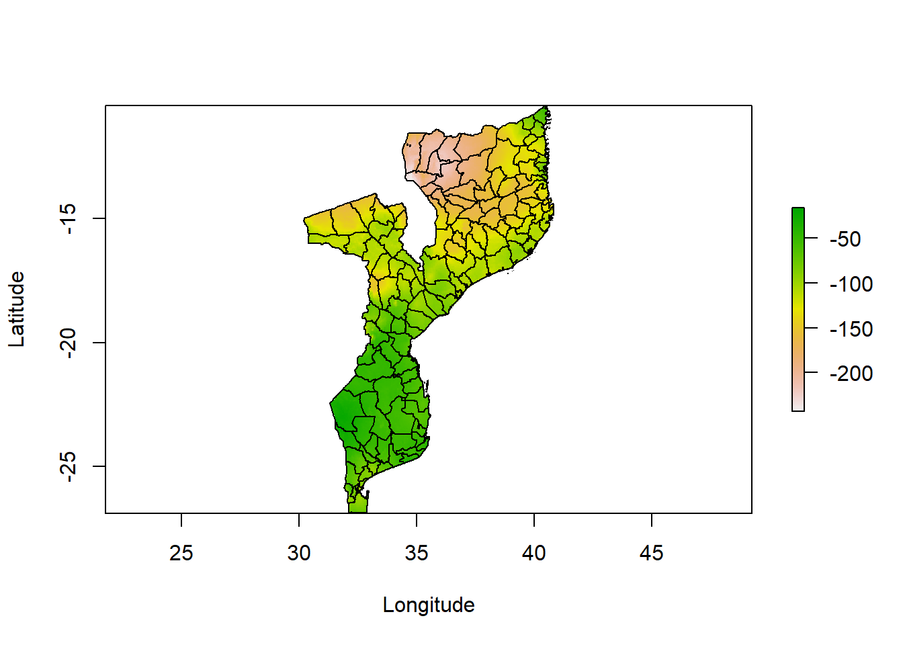
Fig. 5a. Precipitation (annual mean) for Mozambique for 2020 – 2040 compared to reference period 1971 – 2000 for the high emissions scenario (SSP585). BCC-CSM2-MR Model.

Fig. 4b. Mean precipitation change (C) for Cabo Delgado for 2020 – 2040 compared to reference period 1971 – 2000 for the low emissions scenario (ssp126). BCC-CSM2-MR Model.
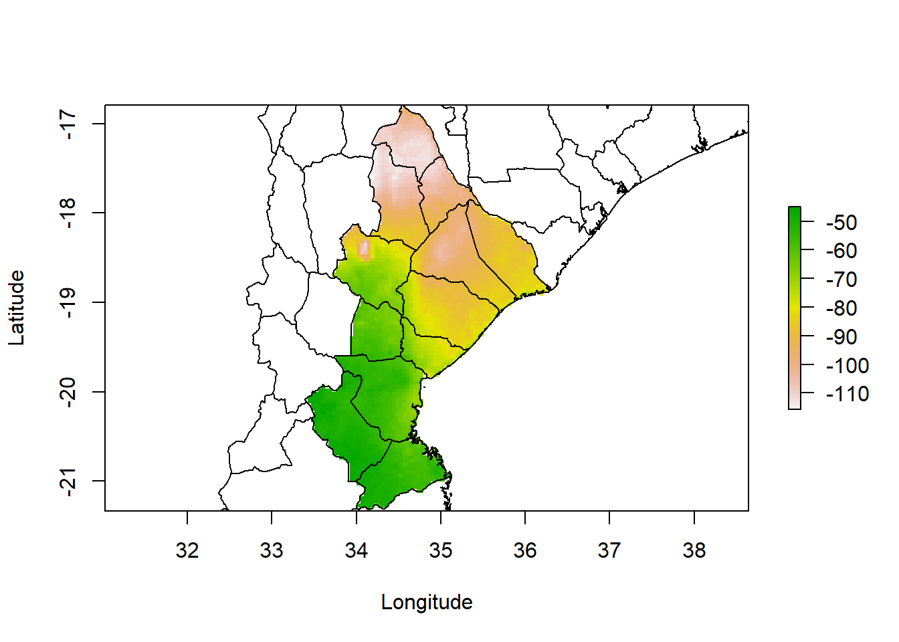
Fig. 4b. Mean precipitation change (C) for Sofala for 2021 – 2040 compared to reference period 1971 – 2000 for the low emissions scenario (ssp126). BCC-CSM2-MR Model.

Fig. xx Mean precipitation change (C) for Gaza for 2021 – 2040 compared to reference period 1971 – 2000 for the low emissions scenario (ssp126). BCC-CSM2-MR Model
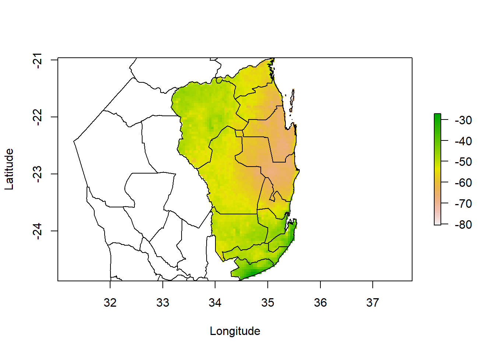
Fig. xx Mean precipitation change (C) for Inhambane for 2021 – 2040 compared to reference period 1971 – 2000 for the low emissions scenario (ssp126). BCC-CSM2-MR Model
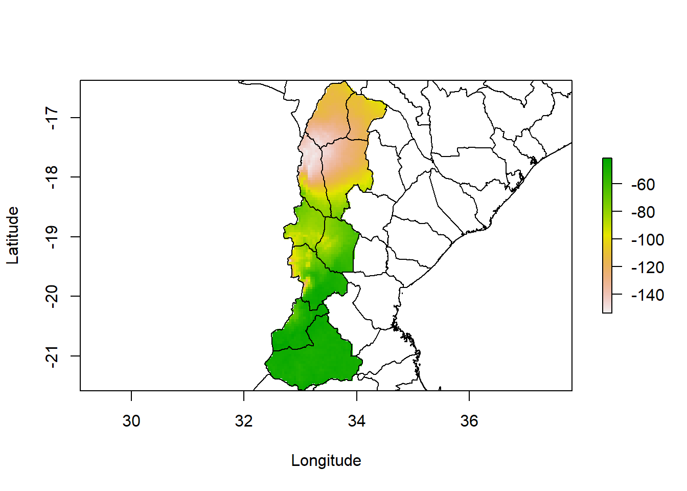
Fig. xx Mean precipitation change (C) for Manica for 2021 – 2040 compared to reference period 1971 – 2000 for the low emissions scenario (ssp126). BCC-CSM2-MR Model

Fig. xx Mean precipitation change (C) for Maputo for 2021 – 2040 compared to reference period 1971 – 2000 for the low emissions scenario (ssp126). BCC-CSM2-MR Model
Fig. xx Mean precipitation change (C) for Maputo City for 2021 – 2040 compared to reference period 1971 – 2000 for the low emissions scenario (ssp126). BCC-CSM2-MR Model
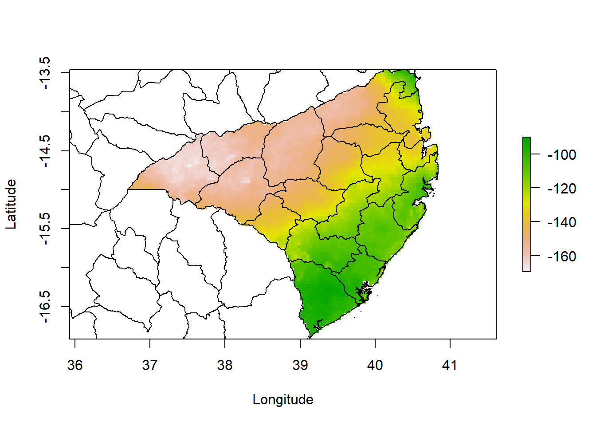
Fig. xx Mean precipitation change (C) for Nampula for 2021 – 2040 compared to reference period 1971 – 2000 for the low emissions scenario (ssp126). BCC-CSM2-MR Model

Fig. xx Mean precipitation change (C) for Nassa for 2021 – 2040 compared to reference period 1971 – 2000 for the low emissions scenario (ssp126). BCC-CSM2-MR Model

Fig. xx Mean precipitation change (C) for Tete for 2021 – 2040 compared to reference period 1971 – 2000 for the low emissions scenario (ssp126). BCC-CSM2-MR Model

Fig. xx Mean precipitation change (C) for Zambezia for 2021 – 2040 compared to reference period 1971 – 2000 for the low emissions scenario (ssp126). BCC-CSM2-MR Model
9.0.3 ssp245
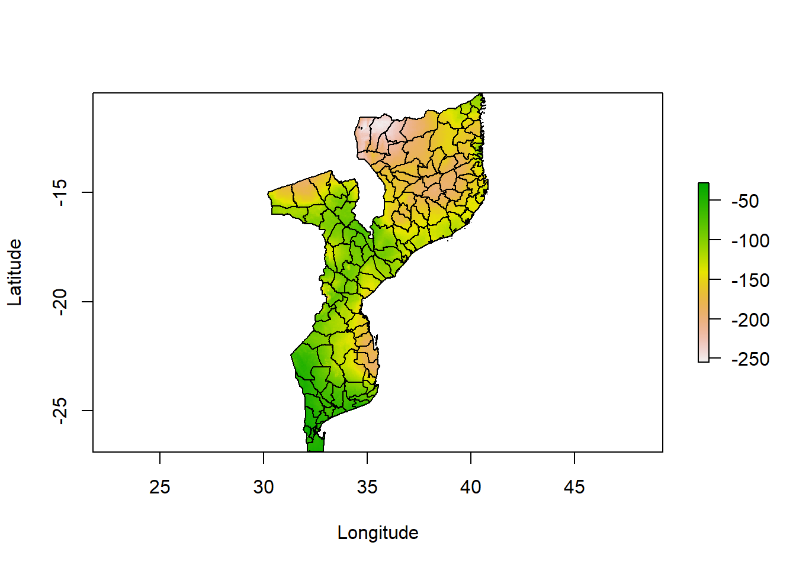
Fig. 5b. Precipitation (annual mean) for Mozambique for 2020 – 2040 compared to reference period 1971 – 2000 for the medium emissions scenario (SSP245). BCC-CSM2-MR Model.
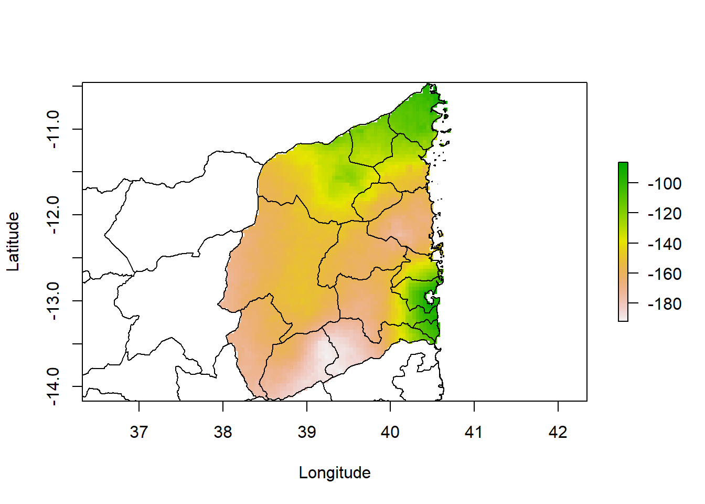
Fig. 4b. Mean precipitation change (C) for Cabo Delgado for 2020 – 2040 compared to reference period 1971 – 2000 for the medium emissions scenario (ssp245). BCC-CSM2-MR Model.

Fig. 4b. Mean precipitation change (C) for maputo for 2021 – 2040 compared to reference period 1971 – 2000 for the medium emissions scenario (ssp245). BCC-CSM2-MR Model.

Fig. xx Mean precipitation change (C) for Gaza for 2021 – 2040 compared to reference period 1971 – 2000 for the medium emissions scenario (ssp245). BCC-CSM2-MR Model

Fig. xx Mean precipitation change (C) for Inhambane for 2021 – 2040 compared to reference period 1971 – 2000 for the medium emissions scenario (ssp245). BCC-CSM2-MR Model

Fig. xx Mean precipitation change (C) for Manica for 2021 – 2040 compared to reference period 1971 – 2000 for the medium emissions scenario (ssp245). BCC-CSM2-MR Model
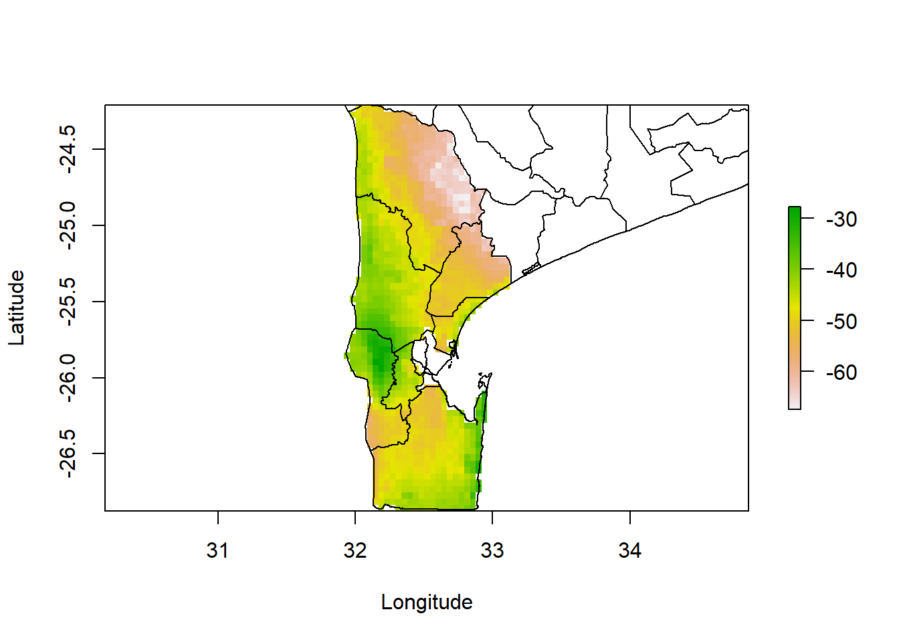
Fig. xx Mean precipitation change (C) for Maputo for 2021 – 2040 compared to reference period 1971 – 2000 for the medium emissions scenario (ssp245). BCC-CSM2-MR Model

Fig. xx Mean precipitation change (C) for Maputo City for 2021 – 2040 compared to reference period 1971 – 2000 for the medium emissions scenario (ssp245). BCC-CSM2-MR Model

Fig. xx Mean precipitation change (C) for Nampula for 2021 – 2040 compared to reference period 1971 – 2000 for the medium emissions scenario (ssp245). BCC-CSM2-MR Model

Fig. xx Mean precipitation change (C) for Nassa for 2021 – 2040 compared to reference period 1971 – 2000 for the medium emissions scenario (ssp245). BCC-CSM2-MR Model
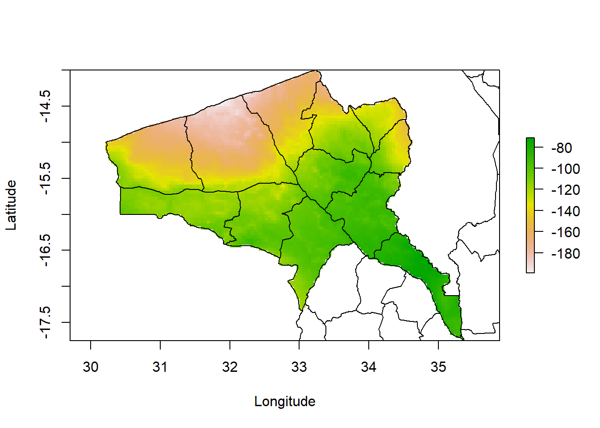
Fig. xx Mean precipitation change (C) for Tete for 2021 – 2040 compared to reference period 1971 – 2000 for the medium emissions scenario (ssp245). BCC-CSM2-MR Model

Fig. xx Mean precipitation change (C) for Zambezia for 2021 – 2040 compared to reference period 1971 – 2000 for the medium emissions scenario (ssp245). BCC-CSM2-MR Model
9.0.4 ssp585

Fig. 5c. Precipitation (annual mean) for Mozambique for 2020 – 2040 compared to reference period 1971 – 2000 for the high emissions scenario (SSP585). BCC-CSM2-MR Model.

Fig. 4b. Mean precipitation change (C) for Cabo Delgado for 2020 – 2040 compared to reference period 1971 – 2000 for the high emissions scenario (ssp585). BCC-CSM2-MR Model.
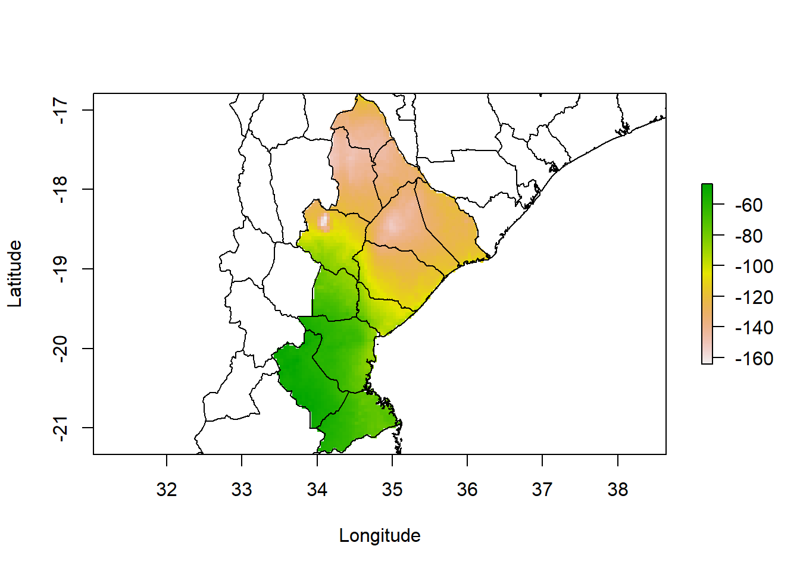
Fig. 4b. Mean precipitation change (C) for maputo for 2021 – 2040 compared to reference period 1971 – 2000 for the high emissions scenario (ssp585). BCC-CSM2-MR Model.
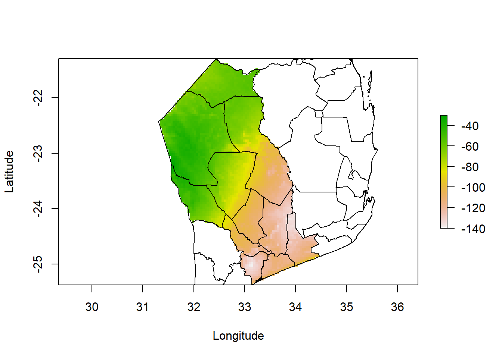
Fig. xx Mean precipitation change (C) for Gaza for 2021 – 2040 compared to reference period 1971 – 2000 for the high emissions scenario (ssp585). BCC-CSM2-MR Model

Fig. xx Mean precipitation change (C) for Inhambane for 2021 – 2040 compared to reference period 1971 – 2000 for the high emissions scenario (ssp585). BCC-CSM2-MR Model
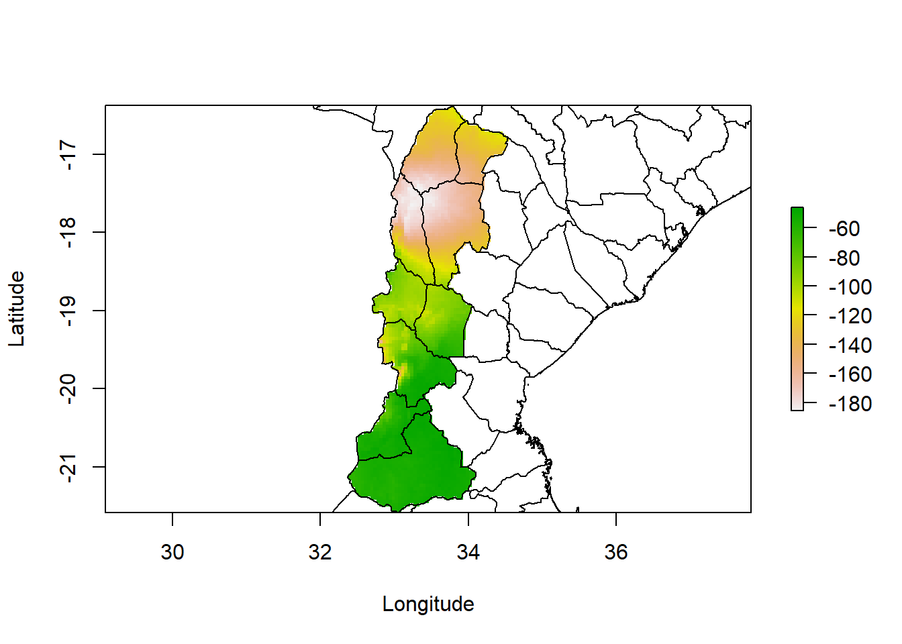
Fig. xx Mean precipitation change (C) for Manica for 2021 – 2040 compared to reference period 1971 – 2000 for the high emissions scenario (ssp585). BCC-CSM2-MR Model

Fig. xx Mean precipitation change (C) for Maputo for 2021 – 2040 compared to reference period 1971 – 2000 for the high emissions scenario (ssp585). BCC-CSM2-MR Model
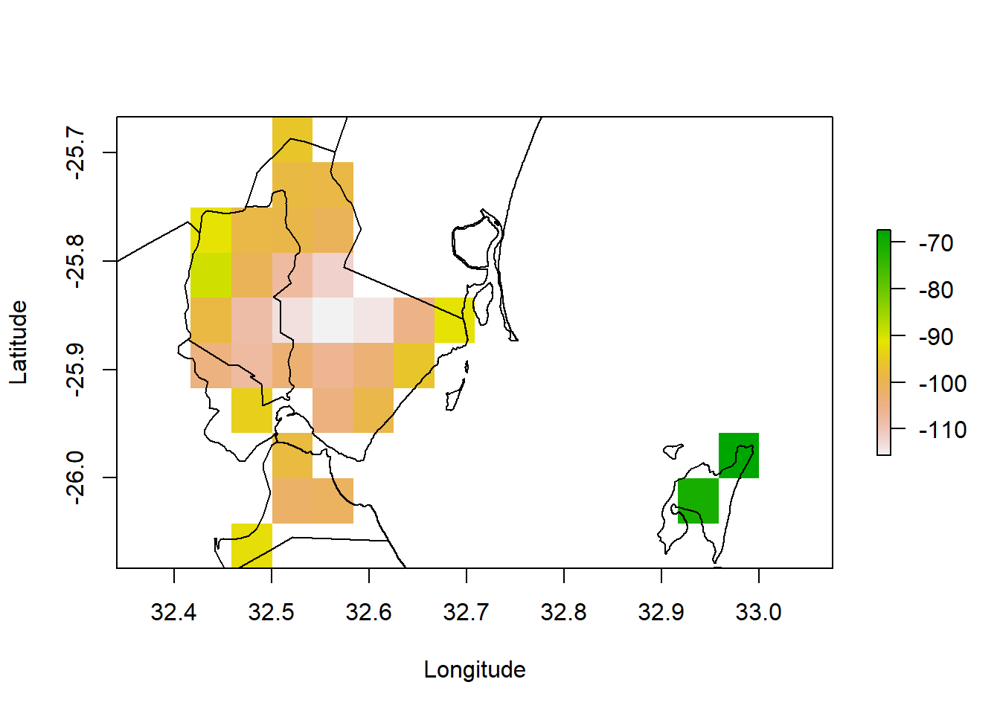
Fig. xx Mean precipitation change (C) for Maputo City for 2021 – 2040 compared to reference period 1971 – 2000 for the high emissions scenario (ssp585). BCC-CSM2-MR Model

Fig. xx Mean precipitation change (C) for Nampula for 2021 – 2040 compared to reference period 1971 – 2000 for the high emissions scenario (ssp585). BCC-CSM2-MR Model
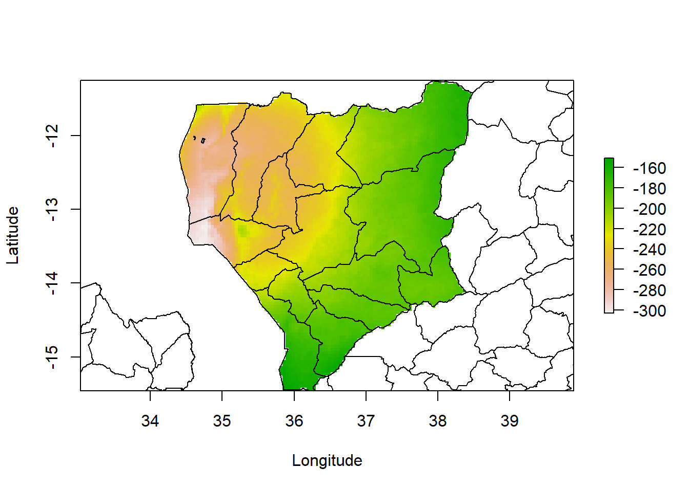
Fig. xx Mean precipitation change (C) for Nassa for 2021 – 2040 compared to reference period 1971 – 2000 for the high emissions scenario (ssp585). BCC-CSM2-MR Model

Fig. xx Mean precipitation change (C) for Tete for 2021 – 2040 compared to reference period 1971 – 2000 for the high emissions scenario (ssp585). BCC-CSM2-MR Model
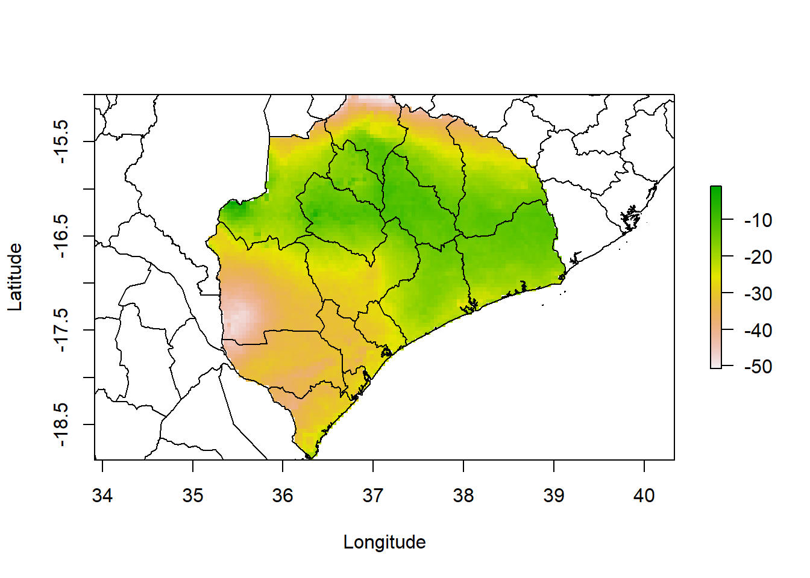
Fig. xx Mean precipitation change (C) for Zambezia for 2021 – 2040 compared to reference period 1971 – 2000 for the high emissions scenario (ssp585). BCC-CSM2-MR Model
9.1 Climate change adaptation assessment
#######################3table###############
#####################tablesssssssssssssss